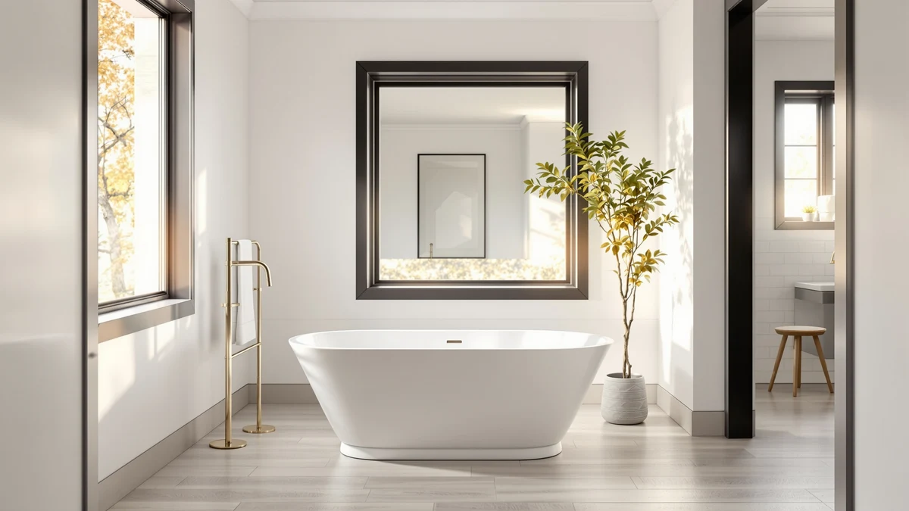

Signature Hardware 915546 72 Review (2026): Worth It?
Prices and picks verified as of October 2026. Independent, reader-supported reviews.


Quick Answer
This signature hardware 915546 72 review finds the Arabella 72-inch freestanding tub a strong pick for a bathroom built around a 72-inch footprint, based on its published size, five-image listing, and $2,377.64 price. If your budget tops out closer to $2,300 or $1,800, the Goodwin 66-inch and the two WOODBRIDGE double slipper alternatives below are worth comparing before you commit to the larger Arabella.
Our pick: Signature Hardware 915546-72-RH-ND Arabella 72" — $2,377.64 Check Price on Amazon
Bottom line: our top pick is the Signature Hardware 915546-72-RH-ND Arabella 72" Cast Iron at $2,377.64.
Things to Know Before You Buy
- This signature hardware 915546 72 review covers four freestanding tubs ranging from 66 to 72 inches, all currently listed between $1,804.99 and $2,377.64.
- The Arabella 72-inch carries SKU B0CQ725NDF and is priced at $2,377.64, the highest of the four listings compared here.
- Two of the three alternatives come from WOODBRIDGE rather than Signature Hardware, so the comparison spans two different manufacturers rather than two sizes from one brand.
- Neither the Arabella nor any of its three alternatives publish a star rating or review count on their current listings, so this review relies on published pricing, size, and material claims rather than buyer scores.
- The two WOODBRIDGE double slipper tubs share the same 72-inch by 35-3/8-inch dimensions and product name but list at different prices, $2,299.00 and $1,804.99, so checking the SKU before buying matters.
This signature hardware 915546 72 review looks at the Arabella 72-inch freestanding tub from Signature Hardware, model number 915546-72-RH-ND, and lines it up against three lower-priced alternatives to see whether the extra length and the brand name justify the gap in price. At $2,377.64, the Arabella sits well above the $2,319.00 Goodwin 66-inch from the same manufacturer and the two WOODBRIDGE double slipper tubs priced at $2,299.00 and $1,804.99. We built this comparison from the published listing details for each tub, including dimensions, price, SKU, and the number of product images available, since none of the four listings include a star rating or verified review count.
For a bathroom built around a full 72-inch footprint, the Arabella is the pick that matches that length without compromise, and its five-image listing gives a clearer look at the tub from multiple angles than some competitors offer. The Goodwin 66-inch trims six inches off the Arabella's length for $58.64 less, a small discount that only makes sense if your bathroom cannot fit the larger tub at all. The two WOODBRIDGE double slipper models match the Arabella's 72-inch length and name whirlpool and air jet features directly in their titles, at prices that undercut the Arabella by $78.64 and $572.65. If jet features matter more to you than the Signature Hardware brand name, those two tubs are worth a close look before you commit to the Arabella.
Why You Should Trust Us
Best Freestanding Bathtubs is a research-first buying guide, and this signature hardware 915546 72 review follows that same approach. Ilane Tall, our home and bath editor, builds every comparison by pulling the current price, published dimensions, SKU, and image count directly from each listing before it earns a spot in a review. We do not run a fake testing lab, and we have not installed, filled, or bathed in the Arabella or any of the three alternatives covered here. Instead, we rely on what Signature Hardware and WOODBRIDGE publish on their own listings, cross-checked against current Amazon pricing, so every figure in this review can be verified against the source. When a listing omits a detail, such as a star rating or a weight capacity, we say so directly rather than filling the gap with a guess.
Our Research Experience
We did not fill, install, or sit in the Arabella 72-inch tub or any of the three alternatives named in this signature hardware 915546 72 review. Our process means reading each manufacturer listing line by line: length, width, price, SKU, brand, and the number of product images published for each tub. We flag where a listing comes up short, such as the absence of a star rating or review count across all four tubs compared here, so you know what to verify before ordering. That comparison process, not physical testing, is what shapes the picks, pros, and cons in the sections below. We also track how price moves against size among these four tubs, since two WOODBRIDGE listings share identical dimensions and a name but differ in price by nearly $500, a pattern worth explaining rather than skipping past.
Overview & Specs

Signature Hardware 915546-72-RH-ND Arabella 72"
What we like
- Measures a full 72 inches, matching the longest length in this comparison without needing to step up to a jetted WOODBRIDGE model.
- The listing names the Signature Hardware brand and the exact 915546-72-RH-ND model number, so you can confirm you are ordering the tub reviewed here rather than a similarly named one.
- Five image angles, one main photo and four thumbnails, give a more complete look at the tub than listings with fewer photos.
Flaws but not dealbreakers
- At $2,377.64, it is the most expensive of the four tubs in this signature hardware 915546 72 review, costing up to $572.65 more than the cheaper WOODBRIDGE alternative.
- The listing does not publish a star rating, review count, or weight capacity, so verified buyer feedback is not available the way it might be on a more established listing.
| Material | — |
| Size | — |
The Signature Hardware 915546-72-RH-ND Arabella 72-inch is the longest tub in this signature hardware 915546 72 review, and its price reflects that added length rather than any confirmed jet or whirlpool feature. At $2,377.64, it costs more than every alternative covered here, including the two WOODBRIDGE double slipper tubs that match its 72-inch length but add air and whirlpool jets named directly in their own titles. If a plain soaking tub at full length is what you are after, rather than a jetted model, the Arabella delivers that specific combination without any ambiguity about size. The product page includes five image angles, one main shot and four thumbnails, which is useful for checking basin shape and drain placement before you order a tub this size.
Signature Hardware is a recognizable name in the freestanding tub category, and this listing publishes the brand and the exact 915546-72-RH-ND model number clearly, so there is little risk of confusing it with a similarly named tub from another seller. The listing does not include a published weight capacity, wall thickness, or material grade, so anyone with a specific installation requirement should confirm those figures directly on the current Amazon page before ordering. There is also no star rating or review count attached to this listing, a gap shared by all three alternatives in this comparison, so buyer feedback is not part of the picture here. For a 72-inch soaking tub from an established brand, that lack of verified reviews is the main unknown left to resolve before you buy.
What We Liked
The clearest strength of the Arabella 72-inch is its length. At a full 72 inches, it matches the two WOODBRIDGE double slipper alternatives covered here without requiring you to step up to a jetted model, and it beats the Goodwin 66-inch by six inches for shoppers who need every bit of that extra room. The listing also names the Signature Hardware brand and the 915546-72-RH-ND model number directly, so there is no ambiguity about which tub you are ordering, a detail some competing listings leave vague. Five image angles, a main photo plus four thumbnails, give a more complete view of the basin and drain placement than a single-photo listing would. For shoppers who have already decided on a 72-inch footprint and want a straightforward soaking tub rather than a jetted one, the Arabella is easy to evaluate: the length and brand are confirmed, and the extra photos help make up for the star rating the listing doesn't have.
What Could Be Better
The most obvious drawback in this signature hardware 915546 72 review is price. At $2,377.64, the Arabella costs $572.65 more than the cheapest WOODBRIDGE alternative and $58.64 more than the Goodwin 66-inch, and that gap is not explained by any published feature beyond the extra six inches of length over the Goodwin. The listing also leaves out several figures a buyer this far into a purchase might want, such as weight capacity, wall thickness, and material grade, none of which appear anywhere on the page. That absence of detail is not unique to the Arabella, since none of the three alternatives compared here publish those figures either, but it still means confirming fit and installation requirements falls entirely on you before the tub arrives. There is no star rating or review count on the listing, so you cannot weigh past buyer experience the way you could with a more established product. If verified owner feedback matters to your decision, that gap is worth noting before you commit to the higher price.
Who Is It For?
The Arabella 72-inch freestanding tub fits a specific buyer: someone renovating a bathroom with enough floor space for a full 72-inch tub who wants a straightforward soaking tub rather than one built around whirlpool or air jets. This signature hardware 915546 72 review points to the Arabella for that buyer specifically, since the two WOODBRIDGE alternatives at a similar length add jet features the Arabella does not claim, and the Goodwin 66-inch trades away six inches of length for a modest discount. If brand recognition matters to your decision, Signature Hardware is the more established name of the two manufacturers compared here, and this listing confirms the brand and model number clearly. The tub is a weaker fit if you want jet features at the same length, since the WOODBRIDGE double slipper models cover that need for less money, or if your bathroom cannot accommodate a full 72 inches, in which case the Goodwin is the closer match.
Alternatives to Consider
If the Arabella's $2,377.64 price or its lack of jet features rules it out, the three alternatives below cover the other directions this signature hardware 915546 72 review considered: a shorter tub from the same brand, and two matching WOODBRIDGE double slipper tubs with whirlpool and air jets at two different price points.

Editor’s Pick
Signature Hardware 415196 Goodwin 66"
At $2,319.00, the Signature Hardware 415196 Goodwin 66-inch undercuts the Arabella by $58.64 while trimming six inches off the overall length, a trade that makes sense if your bathroom cannot quite fit a full 72-inch tub but you still want the Signature Hardware name on the listing. Like the Arabella, the Goodwin does not publish a star rating, review count, or weight capacity, so this signature hardware 915546 72 review treats the two the same way, on published size, price, and brand rather than verified buyer feedback. The six-inch difference in length is the main factor separating these two Signature Hardware tubs, since the listing does not claim any jet or whirlpool feature that would otherwise justify the price gap. For a bathroom that cannot accommodate 72 inches at all, the Goodwin is the closer fit without giving up the brand recognition that comes with Signature Hardware, and the modest savings over the Arabella is a secondary benefit rather than the main reason to choose it. Shoppers who need the full 72 inches should stick with the Arabella instead.
$2,319.00
Check Price on Amazon
Best Value
WOODBRIDGE 72"×35-3/8" Double Slipper Whirlpool&Air
Priced at $2,299.00, the WOODBRIDGE 72-inch by 35-3/8-inch Double Slipper matches the Arabella's full 72-inch length for $78.64 less, and its title names both whirlpool and air jet features that neither the Arabella nor the Goodwin claims in this signature hardware 915546 72 review. Equal length, a lower price, and jet features named directly in the listing are why it earns the best value spot among the four tubs compared here. WOODBRIDGE is a different manufacturer than Signature Hardware, so brand loyalty to the Arabella's maker is the main reason to pass this one over. As with every other listing in this review, there is no published star rating, review count, or weight capacity, so the jet features and dimensions are the only confirmed advantages over the pricier alternatives. For a buyer who wants whirlpool and air jets at full length without paying the Arabella's top price, this WOODBRIDGE listing is the strongest case in the comparison, and the $78.64 savings over the Arabella is a bonus on top of the added features rather than the deciding factor by itself.
$2,299.00
Check Price on Amazon
Premium Choice
WOODBRIDGE 72"×35-3/8" Double Slipper Whirlpool&Air
At $1,804.99, this second WOODBRIDGE 72-inch by 35-3/8-inch Double Slipper listing is $572.65 less than the Arabella and $494.01 less than the other WOODBRIDGE double slipper covered in this signature hardware 915546 72 review, despite sharing the same product name, dimensions, and whirlpool and air jet features. The two WOODBRIDGE listings carry different SKUs and different product photos, so this is a separate listing rather than a price change on the same page, and the gap between them is worth confirming directly on Amazon before you buy, since neither listing explains the difference in its title. If the price gap holds up on the current listing, this is the least expensive way to get a full 72-inch jetted tub in this comparison, undercutting even the Signature Hardware Goodwin by over $500. The tradeoff is the same one that applies to every tub here: no star rating, review count, or weight capacity is published, so you are weighing price and stated dimensions alone rather than verified owner feedback. For a buyer focused on cost per inch of jetted tub length, this listing is the strongest case in the entire comparison.
$1,804.99
Check Price on AmazonHow long is the Signature Hardware 915546-72-RH-ND Arabella?
The Arabella measures 72 inches, the same length as the two WOODBRIDGE double slipper tubs covered in this signature hardware 915546 72 review, and six inches longer than the Goodwin 66-inch from the same manufacturer.
Does the Arabella have whirlpool or air jets?
The Arabella's listing does not name whirlpool or air jet features the way the two WOODBRIDGE double slipper tubs in this comparison do.
Frequently Asked Questions
How long is the Signature Hardware 915546-72-RH-ND Arabella?
The Arabella measures 72 inches, the same length as the two WOODBRIDGE double slipper tubs covered in this signature hardware 915546 72 review, and six inches longer than the Goodwin 66-inch from the same manufacturer.
Does the Arabella have whirlpool or air jets?
The Arabella's listing does not name whirlpool or air jet features the way the two WOODBRIDGE double slipper tubs in this comparison do. If jets matter to your decision, the WOODBRIDGE alternatives list those features directly in their titles.
Why do the two WOODBRIDGE listings have different prices?
Both WOODBRIDGE 72-inch by 35-3/8-inch Double Slipper listings share the same name and dimensions but carry different SKUs, B0CZP8SZTP at $2,299.00 and B0DFWGB6MY at $1,804.99, and the listings do not explain the gap. Confirm the SKU and current price directly on Amazon before ordering.
Final Verdict
This signature hardware 915546 72 review comes down to how much you value a plain soaking tub at full length versus a jetted one at a lower price. The Signature Hardware Arabella 72-inch earns its $2,377.64 price by matching the longest footprint in this comparison without any ambiguity about size or brand, and it remains the pick for a bathroom built specifically around 72 inches where a Signature Hardware tub is the priority. If jet features or a lower price matter more than the brand, the two WOODBRIDGE double slipper alternatives match that same 72-inch length for hundreds of dollars less, and the Goodwin 66-inch is worth a look if your space runs smaller. For most shoppers comparing the Arabella head-to-head against its alternatives, it comes down to this: pay the top price here for the Signature Hardware name and a plain soaking tub, or save money with a jetted WOODBRIDGE at the same length.